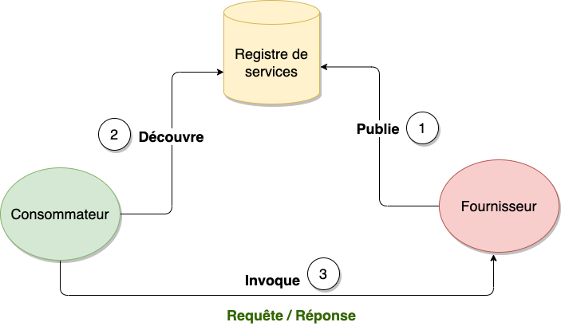

2 Concepts clés de la conception orientée services
Pour cerner le paradigme de la conception orientée services, il est nécessaire de clarifier un certain nombre de concepts et de mots clés qui le supportent. Cette partie sera consacrée à définir la conception orientée service (Service Oriented Design), l’architecture orientée service (Service Oriented Architecture) et plusieurs mots clés.
2.1 Qu’est-ce que la conception orientée services ?
L’analyse et le conception orientée services (SOAD : Service Oriented Analysis and Design) est une méthodologie qui fait réference au processus de modélisation et à la conception d’architecture orientée services (SOA : Service Oriented Architecture).
La conception orientée services est le processus par lequel les services d’une application qui supportent un processus métier sont dérivées en services logiques, puis assemblés en composition abstraite. Elle a pour objectif de :
- déterminer l’ensemble des extensions architecturales
- définir le périmètre de l’architecture
- identifier les standards de conception réquis
- définir les conceptions abstraites d’interface de service.
- identifier les compositions de services potentiels
- évaluer la prise en charge des principes d’orientation vers les services.
- explorer l’utilisation des caractéristiques de la SOA contemporaine.
Une approche SOAD dans la conception SOA nécessite les éléments clés suivants :
- un modèle de processus
- des instructions
- des normes
- des artefacts
- une qualité de service.
Modèle de processus : elle consiste en la définitation du processus et de la notation en faisant un mélange de l’analyse orientée objet (UML), la modélisation des processus métier (BPM) et des éléments d’architecture d’entreprise.
Instruction : c’est la manière structurée de conceptualiser les services
Normes : fournir des facteurs de qualité bien définis et les meilleures pratiques de service, de capacité, de données et de granularité des contraintes. Les rôles doivent être bien définis et indiquer si c’est un développeur, un architecte ou un analyste qui est responsable de chaque fraction du travail.
Artefacts : elle consiste à définir ce qui n’est pas un bon servicee, comme les services qui ne sont pas réutilisables, et qui ne sont donc pas considérés comme des résidents SOA.
Qualité de service : elle facilite la modélisation de bout en bout et fournit un support complet d’outils.
2.2 Qu’est-ce que la SOA (Service Oriented Architecture) ?
L’architecture orientée services (Services Oriented Architecture, SOA) est un modèle de développement logiciel à base de composants applicatifs (services) distribués et doté de fonction de découverte, de contrôle d’accès, de mappage de données et de sécurité.
Un service est une unité autonome de fonctionnalité logicielle, ou d’un ensemble de fonctionnalités, conçue pour réaliser une tâche précise comme récupérer des informations ou exécuter une opération.
2.2.1 L’Architecture Orientée Service (SOA)
L’architecture SOA a deux grandes fonctions. La première s’agit de créer un modèle d’architecture qui définit les objectifs des applications et les approches pour les atteindre; ensuite, définir des caractéristiques de mise en oeuvre précises, souvent liées à celles du langage de description de services WSDL (Web Services Descriptio Language) et du protocole SOAP (Simplee Object Access Protocol).
L’approche SOA intègre nativement les principes de modularité, d’interfaçage, de contractualisation, et d’interopérabilité. Elle assure ainsi une adaptation rapide du système d’informationn au regard des évolutions des besoins de l’entreprise. Elle permet également de capitaliser la mise en place de bonnes pratiques par l’élaboration d’une architecture de reference. Cette architecture de référence pourra également être utilisée pour répondre à des problématiques de convergence de systèmes.
L’architecture SOA se base sur les ressources de l’entreprise pour fournir un système informatique efficient. Ce sont :
- pratique : elle utilise les best-practices de l’entreprise pour construire une architecture efficace
- plateforme : augmenter l’efficacité opérationnelle
- utilisateur : augmenter l’efficacité opérationnelle
- processus : aligner l’IT au processus métiers de l’entreprise
Selon le Gartner Group Research, une application qui obéit à la SOA doit respecter les cinq (5) principes suivants :
- Le système doit être modulaire. Cela offre l’avantage évident de pouvoir diviser et régner (résoudre un problème complexe en assemblant un ensemble de petits composants simples qui fonctionnent ensemble)
- Les modules doivent être distribuables. Ils doivent être capables de fonctionner sur des ordinateurs différents et communiquent entre eux en envoyant des messages sur un réseau lors de leur exécution.
- Les interfaces d’un module doivent être clairement définies et documentées. Les développeurs de logiciels écrivent ou génèrent des métadonnées d’interface qui spécifient un contrat explicite afin qu’un autre développeur puisse trouver et utiliser le service (cela permet le couplage faible)
- Un module qui implémente un service peut être remplacé par un autre module qui offre le même service et la même interface, car l’interface conçue est distincte du module. Il s’agit d’un aspect du couplage faible qui permet une maintenance et des améliorations continues.
- Les modules du fournisseur de services doivent être partageables. Ils sont conçus et déployés de manière à pouvoir être invoqués successivement par des modules consommateurs de services disparates engagés dans des activités métiers diverses, bien que partiellement liées.
2.2.3 Les différents rôles de la SOA
L’architecture orientée service est basée sur trois(3) rôles essentiels :
- le fournisseur ou producteur : un fournisseur crée des services web qu’il met à la disposition du registre de services. Il est responsable des conditions de ces services.
- le broker ou registre de services : un broker ou registre de services est chargé de fournir les informations sur le service au démandeur. Le registre peut être publique ou privé.
- le consommateur ou demandeur : le consommateur de services cherche un service dans un broker ou registre de services, puis se connecte à un fournisseur de service pour obtenir le service en question.

2.2.4 Les extensions de l’architecture SOA - Architecture Evenementielle (Event Driven Architecture)
Dans un système orienté événements, la structure centrale de la solution repose sur la capture, la communication, le traitement et la persistence des événements. C’est ce qui différencie ce type de système du modèle traditionnel orienté requête.
Evénement : un événement désigne tout phénomène ou changement d’état significatif au niveau du matériel ou d’un logiciel système. Il ne faut pas confondre un événemet et une notification d’évenement, c’est-à-dire une notification ou un message envoyé par le système pour signaler à une autre partie du système qu’un événement s’est produit. Les événements peuvent être causés par des actions internes ou externes. Ils peuvent être provoqués par des utilisateurs ( clics de souris ou frappe sur le clavier, par exemple), provenir d’une source externe (un capteur) ou être générés par le système (lors du chargement d’un programme, par exemple).
Ce type d’architecture implique des producteurs et des consommateurs d’événements. Un producteur d’événements détecte ou reconnaît un événement et le représente sous forme de message. Il ignore quels seront les consommateurs et les conséquences de chaque événement. Lorsqu’un évenement a été détecté, il est transmis du producteur au consommateur via des canaux d’événement, où une plateforme de traitemennt les prend en charge de façon asynchrone. Les consommateurs doivent être informés lorsqu’un événement se produit. Ils peuvent traiter l’événement ou être seulement affectés par ce dernier. La plateforme de traitement des événements exécute ma reponse adaptée à chaque événement et envoie l’activité en aval au consommateurs concernés. Cette activité permet de visualiser le résultat d’un événement.
Une architecture orientée événements peut être basée sur un modèle de publication/abonnement ou sur un modèle de flux d’événements.
Le modèle de publication/abonnement : ce modèle est une infrastructure de messagerie basée sur des abonnements à flux d’événements. Lorsqu’il est utilisé, chaque fois qu’un événement se produit ou est publié, il est envoyé aux abonnés qui doivent en être informés.
Le modèle de flux d’événement : avec ce modèle de flux d’événements, les évenements sont enregistrés dans un journal. Au lieu d’être abonnés à un flux d’évenements, les consommateurs peuvent accéder à n’importe quelle partie du flux et le rejoindre à tout moment.
2.2.5 Les extensions de l’architecture SOA - Les API (Application Programming Interface)
Une API (Application Programming Interface) ou Interface de Programmation d’Application est un ensemble de définitions et de protocoles qui facilite la création et l’intégration de logiciel d’applications. Les API permettent à votre produit ou service de communiquer avec d’autres produits et services sans connaître les détails de leur implémentation. Les API sont parfois considérés comme des contrats avec une documentation qui constitue un accord entre les parties : si la partie 1 envoie une requête à distance selon une structure particulière, le logiciel de la partie 2 devra répondre selon les conditions définies.
Il existe plusieurs types d’API: les API privées , les API publiques et les API partenaires.
L’API privée est utilisables qu’en interne de l’entreprise. Cette approche permet d’avoir un contrôle total sur l’API.
L’API publique est accessible à tous. Cette approche autorise les tiers à développer des applications qui interagissent avec votre API et peut devenir source d’innovations.
L’API partenaire est partagée avec certains partenaires de l’entreprise. Cette approche peut générer de nouveaux flux de revenus sans compromettre la sécurité.
2.2.6 Les extensions de l’architecture SOA - Les microservices
Les microservices sont une interprétation moderne des architectures orientées services utilisées pour créer des systèmes logiciels distribués. Les architectures de microservices fonctionnent d’une manière très similaires à la SOA, dans le sens où elles utilisent des services faiblement couplés. Par contre, elles poussent la destructuration de l’architecture classique encore plus loin.
Les architectures logicielles à base de microservices ne sont que des mises en oeuvre actualisées du modèle SOA. Les composants logiciels sont conçus comme des services à exposer via des API, comme l’exige la SOA. Un broker d’API fait l’intermédiaire : il donne accès aux composants et garantit l’observation des règles de sécurité et de gouvernance. Par des techniques logicielles, il assure la correspondance entre les différents formats d’E/S des microservices et les applications qui les utilisent.
Chaque service est distinct. Vous pouvez remplacer, améliorer ou supprimer chacun d’entre eux sans affecter les autres services de l’architecture. Cette architecture légère vous aide à optimiser les ressources distribuées ou Cloud et à faire évoluer chaque service de façon dynamique.
2.3 Qu’est-ce qu’un service ?
Le service est un concept fondamental dans le paradigme de l’orienté services. Il est l’unité de base des fonctionalités métier d’une entreprise que l’on peut mettre à la disposition de tiers par le biais d’un contrat de service.
Le contrat de service définit toutes les interactions entre le fournisseur et le consommateur. Cela comporte : l’interface du service, la documentation de l’interface, les règles d’usage du service (politiques), la qualité de service, la performance
La figure ci-dessous (Fig. 2.4) présente la structure d’un service.
En plus de sa structure, un bon service doit avoir les caractéristiques suivants : la modularité, l’encapsulation, le couplage faible, l’isolation des responsabilités, l’autonomie, la reutilisabilité, la découverte et le la liaison dynamique, il est sans état, l’auto-description, composable, gouverné par des règles, indépendance de localité, de langage et de protocole.
2.3.1 Service - Modularité et granularité
Les processus métier sont décomposés en services modulaires autonomes. Les services eux-mêmes peuvent être composés d’autres services modulaires et peuvent être combinés et mis en rélief selon les besoins pour créer de nouveaux services composites.
La granularité est une fonction de richesse pour un service; plus un service est grossier, plus la fonction offerte par le service est riche ou étendue. Les services à gros grain offrent un plus grand niveau de fonctionnalité au sein d’une opération de service unique. Cela permet de réduire la complexité et la surcharge du réseau en réduisant les étapes nécessaires pour mener à bien une activité métier précise. Le service à granularité fine permet l’échange de petites quantités d’informations pour effectuer une tâche spécifique. Exemple ?
Dans n’importe quel système les processus métier d’entreprise sont batis sur cette hierarchie des services.
- les services métier : ce sont les services les plus grossiers. Les services métier exposent à l’entreprise des fonctions métier composites de haut niveau. Il est généralement composé de plusieurs services de niveau inférieur ou plus fins.
- les services de domaine : Les services de domaine sont à grain moyen. Ils fournissent des services liés à l’entreprise qui sont spécifiques à un domaine d’activité et sont utilisés par de nombreux services d’entreprise différents dans ce domaine (par exemple, la validation d’une inscription) mais peuvent ne pas être exposés en dehors du domaine
- les services utilitaires : Les services utilitaires sont les moins grossiers. Ils fournissent des services de niveau inférieur qui fournissent des fonctionnalités communes à toute l’entreprise (par exemple, la validation du carnet d’adresses ou du numéro de série)
- les services d’intégration : Ceux-ci exposent les applications existantes en tant que services utilisables par le reste de l’entreprise et fournissent un accès consolidé cohérent aux données de l’entreprise qui sont réparties sur de nombreuses sources de données différentes. La granularité des services d’intégration dépendra en partie des systèmes existants qu’ils exposent. Les services d’intégration impliquent généralement une transformation entre le modèle d’entreprise et le modèle d’application, à la fois au niveau fonctionnel et informationnel.
- les services externes : Ceux-ci donnent accès à des systèmes et applications fournis par des fournisseurs ou des partenaires externes à l’entreprise (par exemple, la validation des cartes de crédit ou le suivi des expéditions). La granularité des services externes dépendra du fournisseur de services particulier. Bien que traditionnellement ceux-ci aient été relativement fins, les nouveaux fournisseurs de logiciels en tant que service créent une grande variété de services dans tous les domaines.
- les services de base : Celles-ci fournissent des fonctionnalités à granularité fine qui sont utilisées dans la construction de services de niveau supérieur, indépendamment de tout domaine métier (par exemple, la sécurité, la journalisation et l’orchestration).
Une des caractéristiques importantes du service est la taille. Elle permet de distinguer comment le service est utilisé. Les quatre dimensions sont : la portée, l’appartenance, la granularité et la construction.
La portée : La portée définit les limites organisationnelles dans lesquelles un service est censé fonctionner.
La propriété : La propriété définit l’unité organisationnelle responsable de la prise en charge d’un service. Dans une architecture SOA, cela va bien au-delà de la simple maintenance et des opérations jusqu’au cycle de vie global du service.
La pratique courante veut qu’il existe un groupe de services central responsable de la propriété des services partagés dans l’ensemble de l’entreprise. En outre, chaque secteur d’activité (ou unité organisationnelle plus petite) peut disposer de certains services qu’il possède individuellement.Toutes les combinaisons possibles de propriété et de portée peuvent exister pour les services au sein d’une organisation donnée.
La granularité : La granularité décrit la taille d’un service en termes de quantité de fonctions métier exécutées dans une seule transactionn de requête/réponse de messages.
La construction : La construction fait référence à la manière dont le service a été implémenté. Par exemple, il peut être implémenté directement sous forme de code tel qu’un service de petite granularité ou il peut être composé d’autres services tels qu’un service métier. Mais il existe également d’autres options très différentes. Le service peut être essentiellement un wrapper de service autour de certaines fonctions ou données existantes dans une application héritée. Nous appelons cela un service d’intégration. Ou, le service peut être fourni (tel quel) par un partenaire commercial, comme la possibilité de localiser un envoi avec FedEx en fonction de son numéro de suivi. Nous appelons cela un service externe.
Ci-dessous la figure qui resume les dimensions d’un service.
2.3.2 Service - Encapsulation
Les bons services présentent une séparation stricte entre l’interface d’un service (ce qu’un service fait) et la mise en oeuvre du service (comment c’est fait). L’encapsulation masque les détails d’implémentation interne du service et les structures de données des opérations d’interface publiées et du modèle sémantique.
2.3.3 Service - Le couplage faible
Le couplage décrit le nombre de dépendances entre un consommateur et un fournisseur de services. Les services faiblement couplés ont peu de dépendances bien connues et gérées. Les services étroitement couplés ont de nombreuses dépendances connues et, plus important encore, inconnues. Le degré de couplage affecte directement la flexibilité et l’extensibilité d’un système.
Il existe plusieurs dimensions dans le couplage. Dans les systèmes distribués, le couplage était traditionnellement pensé par rapport au temps, et la discussion à ce sujet était encadrée en termes de mécanismes de communication synchrones ou asynchrones. Cependant, dans les systèmes basés sur les services, la dimension la plus importante du couplage est la relation <<used>> ou <<used by>> entre le consommateur et le fournisseur.
Pour atteindre le couplage faible, il faudrait s’assurer des éléments suivants : la transparence de l’emplacement, l’interface et son implémentation, les données, le versionage, l’intéroperabilité et l’indépendance de plateforme, l’utilisation, les hypothèses et connaissances.
La transparence de l’emplacement : La transparence de l’emplacement soulage le consommateur du service de la nécessité de savoir quoi que ce soit sur l’emplacement du service. Le consommateur s’adresse à un registre pour avoir les informations de l’emplacement de manière dynamique.
Les emplacements de service peuvent être déplacés au fur et à mesure de la migration des systèmes ou à des fins de redondance et de basculement.
Interface et implémentation : L’un des concepts importants des applications distribuées consiste à découpler l’interface de l’implémentation. Cela permet à une implémentation de service de changer (par exemple, modifier la représentation des données internes ou migrer d’un système hérité vers une nouvelle implémentation) sans nécessiter de modifications des consommateurs de services. La SOA réduit le couplage et la dépendance entre les fournisseurs de services et les consommateurs en garantissant que le contrat d’interface est leur seul moyen d’interaction.
Les données : Vous pouvez également penser au découplage en termes de définition des données. Le concept d’information, masquage vous demande de définir une vue publique des données (les données sémantiques), puis de la mapper à la vue interne (les données du domaine) ou à l’implémentation. Un service ne doit jamais exposer ses structures de données internes. Même la plus petite quantité d’informations internes exposées en dehors du service entraînera des dépendances inutiles. Seules les informations disponibles dans le modèle sémantique sont exposées via l’interface. Dans l’implémentation du service, ces informations sont transformées entre le modèle d’informations sémantique et le schéma interne pour isoler les deux. En d’autres termes, les définitions de données internes sont mappées dans la sémantique du contrat externe. Le contrat dépend uniquement du domaine problématique du service, et non des détails de mise en œuvre interne.
Cela permet à la vue interne d’évoluer sans affecter les clients et empêche les clients de faire des suppositions sur la mise en œuvre.
Le versionnage : Les services évolueront inévitablement pour répondre aux nouvelles exigences. Cependant, comme les services sont utilisés au-delà des frontières de l’organisation ou de l’entreprise, le producteur d’un service ne peut pas contrôler quand le consommateur d’un service mettra à jour son implémentation. De plus, comme de plus en plus de consommateurs dépendent d’un service spécifique, il devient plus difficile sur le plan logistique de gérer une migration de version forcée. Au niveau de l’entreprise, si les consommateurs de services ne peuvent pas garder le contrôle du cycle de vie de leurs propres applications et des calendriers de publication, il est peu probable qu’ils utilisent ce service. Une SOA doit tenir compte de ces problèmes via une combinaison d’infrastructure, de conception d’interface, de définition de données, de liaison dynamique et de politique de gestion des versions. Par exemple, l’infrastructure pour la définition, la recherche et l’appel du service doit prendre en charge les numéros de version et plusieurs versions simultanées.
Les fournisseurs de services doivent se conformer à une politique de gestion des versions. Une politique typique décrirait deux classes de mise à niveau : les améliorations mineures et les améliorations majeures. Les améliorations mineures sont des corrections de bogues et d’autres petites modifications qui ne modifient pas le comportement ou les interfaces (bien qu’elles puissent améliorer les capacités de manière simple). Des améliorations majeures modifient les interfaces et/ou le comportement. Une politique typique nécessiterait une rétrocompatibilité entre les mises à jour de versions mineures. De plus, il faudrait que deux versions majeures soient supportées en continu ou une période minimale (1 à 2 ans) pour qu’une version précédente soit supportée.
Intéroperabilité et indépendance de la plateforme : L’exigence que les services prennent en charge plusieurs consommateurs a des implications en termes de communications, d’interopérabilité et d’indépendance de la plate-forme. Vous ne pouvez pas supposer que tous les consommateurs d’un service utiliseront la même plate-forme. Cela est particulièrement vrai pour les grandes entreprises ou les consommateurs qui se trouvent en dehors des limites de l’entreprise. Par conséquent, vous avez besoin d’un mécanisme de communication compatible entre les plates-formes. Cela permet à n’importe quel client d’accéder à un service et donne aux fournisseurs de services une flexibilité en termes de mise en œuvre de la plate-forme. (Par exemple, en raison d’une acquisition, ils peuvent avoir besoin de mettre en œuvre des services maintenant sur une plate-forme existante, tout en prévoyant de migrer vers une autre plate-forme standard d’entreprise au fil du temps.)
Les services Web peuvent aider à fournir cette interopérabilité, mais ce n’est pas si simple. Comme mentionné précédemment, les services Web évoluent rapidement. Les consommateurs et les fournisseurs doivent conserver autant que possible leur indépendance vis-à-vis de mécanismes spécifiques. Comme alternative, la compatibilité d’interface peut être définie sur la base de signatures d’opération conformes plutôt que sur la compatibilité de type.
Utilisation, hypothèses et connaissances : La SOA est un système faiblement couplé de services et de consommateurs de services. Au moment de la conception, le couplage faible nécessite que les services soient conçus avec peu ou pas d’hypothèses ou de connaissance d’un consommateur de service particulier. La mise en œuvre du service ne doit faire aucune hypothèse quant à l’objectif ou aux caractéristiques techniques ou commerciales du consommateur du service. Une qualité fondamentale d’un service est sa capacité à être réutilisé dans des contextes nouveaux ou différents.
2.4 Quelques mots-clé
Cette partie offre la définition de quelques mots-clé que nous allons utiliser tout le long du document et qui sont spécifiques à l’écosystème SOA.
Enterprise Business Process (EBR) : Un processus métier d’entreprise est un type spécifique de processus métier qui couvre des domaines métier à l’intérieur (ou à l’extérieur) de l’entreprise.
Workflow : Le workflow ou le flux de travail est un style d’informatique dans lequel un processus est décomposé en une série d’étapes, d’activités, de conditions, etc. Les activités de travail passent d’une étape à l’autre en fonction de l’évaluation conditionnelle. Le flux de travail est généralement exécuté par un système de gestion de flux de travail qui prend en charge le développement de flux de travail, la répartition du travail dans les files d’attente, la gestion des processus, etc. Fréquemment, les systèmes de flux de travail incluent des activités effectuées par des humains, où les éléments de travail sont placés dans la boîte de réception d’une personne et les éléments terminés sont placés dans sa boîte d’envoi.
Orchestration : L’orchestration est un type spécifique de flux de travail qui est généralement appliqué à la construction de processus métier à partir de services métier ou de services composites à partir de services plus petits et n’inclut pas les activités humaines. L’orchestration comprend souvent un chef d’orchestre ou un contrôleur qui gère, contrôle ou dirige l’interaction entre les autres parties afin qu’elles n’aient pas de dépendances directes les unes sur les autres.
Business Process Management (BPM) : Wikipédia définit cela comme “un domaine émergent de connaissances et de recherche à l’intersection entre la gestion et les technologies de l’information, englobant des méthodes, des techniques et des outils pour concevoir, mettre en œuvre, contrôler et analyser des processus opérationnels opérationnels impliquant des humains, des organisations, des applications, des documents et d’autres sources d’information”. Vous pouvez le considérer comme un type de construction de processus qui met l’accent sur la gestion des processus métier en plus de la technologie d’orchestration. Une fonction clé des systèmes BPM est la surveillance pour s’assurer que les processus répondent aux objectifs commerciaux. En outre, ils peuvent inclure des fonctions d’audit, de reporting et autres.
Business Process Model : Modèle utilisé pour définir l’exécution et la composition de processus de niveau supérieur à partir de services de niveau inférieur. Les modèles de processus sont exécutés par des outils d’orchestration ou de BPM. Les services métier et les processus métier d’entreprise peuvent être définis par des modèles de processus métier.
2.2.2 Comment implémenter la SOA ?
Pour implémenter la SOA, il existe une panoplie de technologies disponibles. Le choix technologique dépend du besoin de chaque entreprise. Au départ, les mises en oeuvre SOA dérivaient des technologies RPC (Remote Procedure Call), notamment celles orientées objets, disponibles aux alentours de l’an 2000. Avec le temps, ces technologies se sont scindées en deux camps. Le premier, celui des services web, représente la gestion formalisée et hautement structurée de procédures et des composants distants. Le second, le camp du transfert d’état représentatif (REpresentational State Transfer, REST), correspond à l’utilisation des technologies d’Internet pour accéder aux composants d’application hébergés à distance.
Dans le modèle Web Service (WS) de l’architecture SOA, le langage WSDL (Web Service Description Language) sert à connecter les interfaces aux services, et le protocole SOAP à définir les API des composants ou des procédures. Les principes des services web appliqués à la liaison d’applications par un bus de service d’entreprise (Enterprise Service Bus, ESB) ont permis aux entreprises d’intégrer leurs applications, de renforcer l’efficacité et d’améliorer la gouvernance des données.
Contrairement au modèl Web Service, les interfaces de programmation d’application compatibles REST, ou API RESTful, n’ont pas besoin de grosses capacités et sont faciles à comprendre.
Il existe aussi d’autres variantes de l’implémentation de la SOA qui sont en vogue : gRPC, Windows Communication Foundation, les protocoles à base de message tels que Java Message Service ActiveMQ et RabbitMQ.